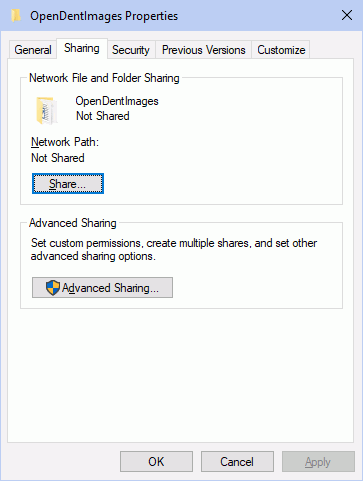

Share A to Z Folder
See Paths.
If you are using Open Dental on multiple computers, you will need to share the A to Z Folder. The following instructions are for Windows 10 operating system. If your operating system is different, the steps may differ.
Note: These are steps for a SMB share. You can run it on a Linux box but it will add a level of complexity to network setup that may complicate future troubleshooting.
- On the server, right-click on the OpenDentImages folder, then select Properties, Sharing tab.
 - Click Share.
- Click the dropdown, select Everyone, then click Add.
- Click the Read dropdown and select Read/Write.
- Click Share.
- Click Done.
The Network path on the OpenDentImages Properties window will read \\SERVER\OpenDentImages.
It is a good idea to give permissions to Everyone in the Security tab as well.
- Click the Security tab.
- Click Edit.
- Click Add.
- Enter Everyone and click OK.
- Check the Full control box.
- Click OK.
Troubleshooting
Problem: I upgraded to Windows 10 and can no longer access the shared OpenDentImages folder.
Solution:
- Confirm there is a password for the Windows server user name.
- Reboot the server.
- On each workstation, go to the File Explorer, then enter the server name as the path.

It should prompt you for a Windows server user name and password.

- Enter the Windows server user name and password, check Remember my credentials, then click OK.